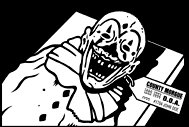

I have givin' up on everything, alot of people dislike me and think I am a loser. Maybe I was made to be a loser? I am pitiful, all you people that think i'm stupid, lame or a script kiddie, go ahead. I have prayed so many times for god to take away the pain inside of me, the pain still exists. My life is a joke and people play along with it, everything goes wrong. What is the point? Nobody cares about me, not in real life and not on the net. People say they like me but I know that is only a mask of how they really feel. There is something wrong, of course there is, I am still alive, Do I deserve to be? If so, answers please because I am just about to totally give up on living this endless torture of a life, and no this is not a joke for anyone who thinks I am being sarcastic, mild minded fools, Well that is all I have to say...

G o o d B y e
I would like to bid farewell to all of my internet friends :
Devil-C | Thanks for everything, you have been a very good friend
Mozy | Probly the nicest person towards me on the internet
Koldkutta | ...keep up the good graphics
ne0h | You are good, and will always be good, I admire your thoughts
lyp0x | bye...